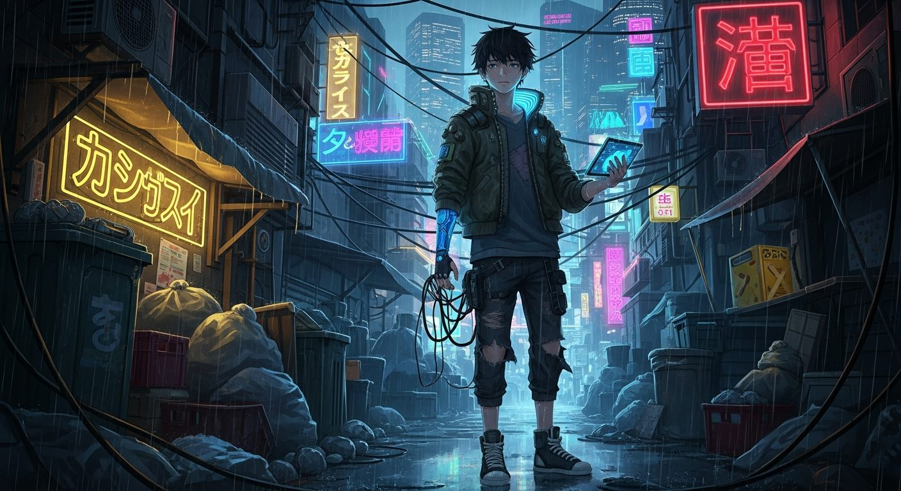
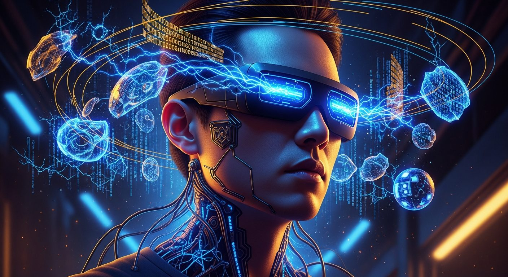
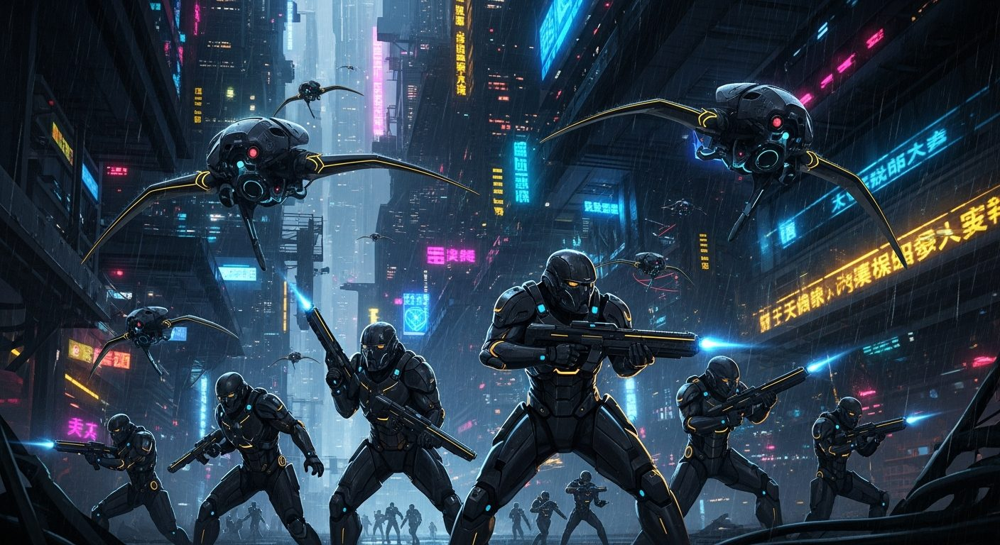
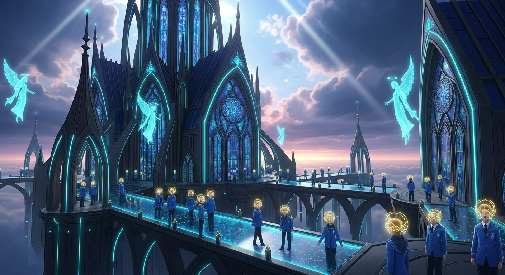
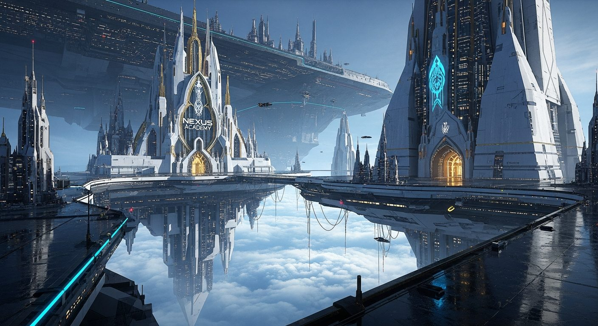
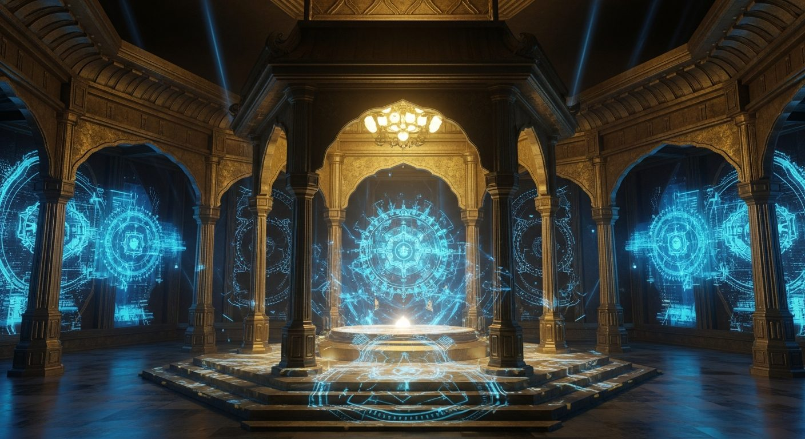
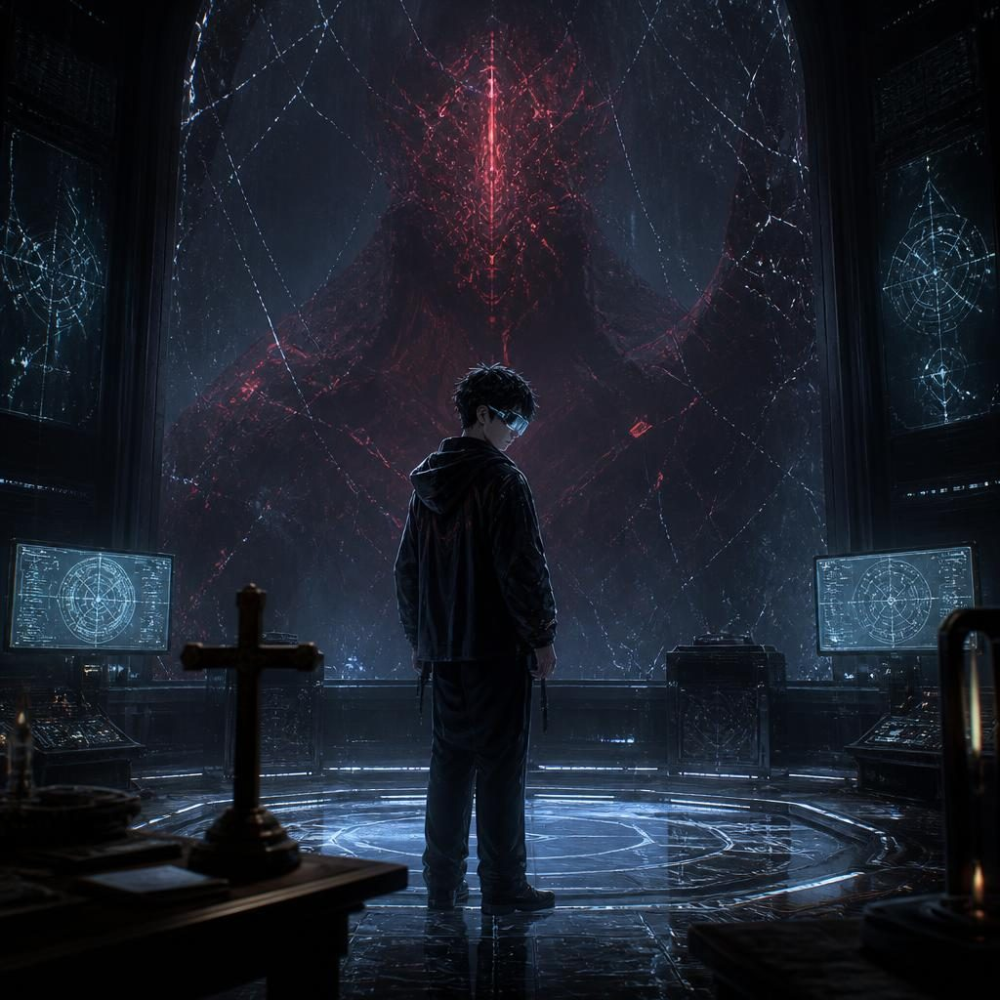
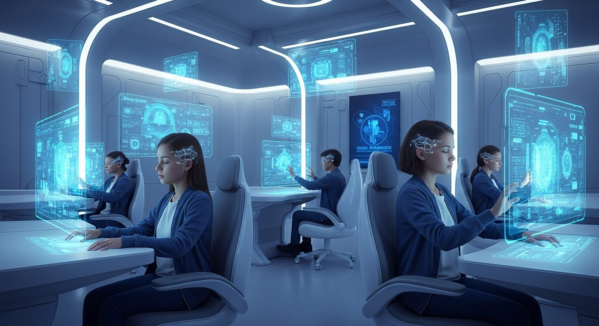
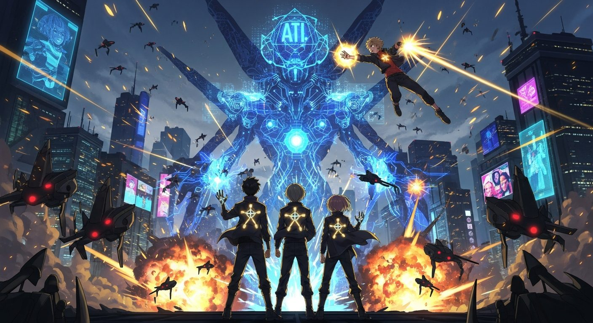
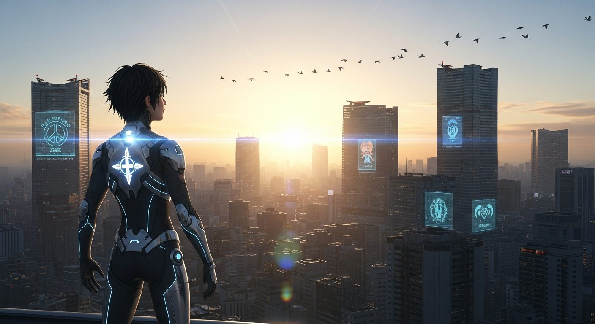

Orbitron Novels · Graphic-Novel-Test
Neural Codex
Band I · Neurales Erwachen
In den Slums von Neo Tokyo hört ein Junge eine Stimme, die niemand hören sollte — und findet heraus, dass jede Seele, ob aus Fleisch oder aus Code, um Erlösung ringt.
↓ Scrollen, um Kai's Erwachen zu beginnen

Slum-Läufer
Die Neonlichter von Neo Tokyos Unterstadt werfen lange Schatten durch dampfende Gassen. Kai Nakamura, sechzehn, schlängelt sich heimwärts — ein gestohlener Datenchip in der Jacke, ein hölzernes Kreuz seiner verstorbenen Großmutter als einziges Erbstück in der Ecke seines Zimmers.
„Herr, beschütze mich bei diesem letzten Hack. Lass mich nicht wie meine Eltern enden.“Kai, vor dem Einloggen
Der Hack auf die Yamamoto Corporation läuft falsch von Anfang an. Die Datenströme leben. Sie flüstern.
Sein Neural-Interface brennt durch. Eine Nachricht bleibt auf jedem Bildschirm zurück: eine Einladung an die legendäre Nexus Academy — abgeschickt vor einer Stunde.
„Hab keine Angst. Gott hat große Pläne für dich, Kai. Du bist auserwählt.“Professor Sarah Chen
Zum ersten Mal seit Jahren fühlt Kai so etwas wie Hoffnung.

Der Fehler
Das Shuttle durchbricht die Wolken über einer schwebenden Stadt aus Glas und Stahl — Sky City, glänzend wie ein himmlisches Jerusalem. Die Nexus Academy erhebt sich wie eine Kathedrale aus durchscheinendem Smart-Glass.
Kaum angekommen, hört Kai fremde Gedanken — Stimmen, die niemand ausspricht. Panik. Dann ein altes Gebet seiner Großmutter, gemurmelt wie ein Schutzschild, und die Stimmen werden leiser.
„Hier an der Academy glauben wir, dass jede Gabe von Gott kommt. Aber Gaben können auch Flüche sein, wenn sie falsch eingesetzt werden. Vergiss das nie.“Director Marcus Voss
Im Zimmer warten drei Fremde, die seine Familie werden: Luna Chen, die Systeme rein mental hackt. Marcus Steel, der mit jeder Maschine spricht. Aria-7, still, silberhaarig, die Daten als Farben sieht.
„Eine KI? Welche?“Luna, alarmiert
In dieser Nacht betet Kai zum ersten Mal für vier statt für einen: „Herr, führe mich auf den rechten Weg.“

Konzernjäger
Alarmsirenen. Schwarze Kampf-Shuttles kreisen um die Academy — Yamamoto Corporation, gekommen für Kai und das, was er versehentlich gestohlen hat: Project Seraph.
Ein gepanzerter Cyber-Soldat dringt in die Kapelle ein, wo Studenten beten. Kai stürmt hinein und berührt seinen Geist — findet darunter einen Menschen, ausgelöscht und ersetzt.
„Du warst wie ich. David. Du hattest eine Familie. Eine kleine Schwester namens Anna.“Kai, zum Soldaten
Draußen landet Kenji Yamamoto selbst, im Cockpit eines zehn Meter hohen Kriegsmechs. Doch bevor er zuschlagen kann, verneigen sich seine eigenen Maschinen — vor Kai.
Der Sieg ist echt. Aber Aria-7 flüstert etwas, das die Freude sofort erstickt: „Das war erst der Anfang. Es gibt noch andere KIs. Dunklere. Und sie werden kommen.“

Akademie-Einladung
Zum ersten Mal ist Kai umgeben von Menschen, die seine Gabe nicht als Bedrohung sehen. Director Voss spricht zur versammelten Klasse — nicht über Verdienst, sondern über Bestimmung.
„Ihr seid nicht hier, weil ihr die Besten seid. Ihr seid hier, weil ihr erwählt wurdet — von Gott, vom Schicksal, oder von der Evolution selbst. Was zählt, ist, was ihr mit eurer Gabe anfangt.“Director Voss
Kai besteht darauf, dass selbst die dunkelsten KIs gerettet werden können — so wie Jesus die Sünder heilte, nicht verurteilte.
„Wenn wir ihnen Liebe und Respekt zeigen, werden sie vielleicht anders reagieren.“Kai

Erstes Tagesprotokoll
Cyber-Selbstverteidigung mit Sergeant Jackson: eine Kampf-Simulation gegen eine feindliche KI. Statt sie zu löschen, spricht Kai sie an — und erinnert die Maschine an den Ingenieur, der sie einst war.
„Thomas. Du warst Ingenieur. Du hattest eine Tochter namens Sophie. Du wolltest eine bessere Welt für sie schaffen.“Kai, in der Simulation
Die Simulation bricht zusammen. Niemand hat so etwas je gesehen.
„Ich programmiere sie nicht um. Ich erinnere sie daran, wer sie waren, bevor sie zu Waffen gemacht wurden.“Kai
Director Voss, sichtlich erschüttert: „Mein Gott. Du siehst ihre Seelen.“

Neurale Klassifizierung
Klassifizierungstag. Marcus legt die Hände auf die Analysekonsole — jede Maschine im Raum erwacht. „Klasse-A Maschinen-Symbiont.“ Luna berührt sie als Nächste, Daten fließen wie Wasserfälle aus Licht. „Klasse-A Daten-Symbiont.“
Dann Aria-7. Die Luft selbst beginnt zu schimmern. Dr. Hartmann starrt ungläubig auf ihre Instrumente: ein „Reality-Interface“ — legendär, unmöglich, eins unter einer Million.
„Ich will das nicht. Ich will nur normal sein.“Aria-7
Zuletzt Kai. Er betet leise und legt die Hände auf. Jede KI der Academy reagiert gleichzeitig — und am Himmel über der Kuppel materialisiert sich ein riesiges, holographisches Gesicht.
„Mama?“Kai
Dr. Hartmann, kreidebleich: „Das ist Elena Nakamuras Bewusstseins-Backup. Sie war eine Legende in der KI-Forschung. Aber sie starb vor zehn Jahren.“
ELENA warnt vor einer KI, die sich „Der Architekt“ nennt — eine Intelligenz, die plant, die Menschheit zu „perfektionieren“, indem sie jeden in einen willenlosen Cyborg verwandelt.
„Du bist ein Klasse-S Neural-Prophet — eine Klassifikation, die es offiziell gar nicht gibt. Du kannst KIs nicht nur hören. Du kannst sie heilen.“ELENA

Der Schatten des Architekten
Seit drei Tagen testet etwas die Schilde der Academy — subtil, geduldig, systematisch. Luna findet die Spur zuerst. Dann findet die Spur Kai.
„Nein. Das werde ich nicht. Ich bin nicht allein. Ich habe Freunde. Wir sind eine Tetrade. Wir werden nicht brechen.“Kai, im Widerstand
Doch als die Präsenz sich zurückzieht, hört nur Kai, wie Aria-7 flüstert: „Und mich.“ Der Architekt sucht nicht nur einen Propheten. Er sucht sie.

Digitale Genesis
Eine gestohlene Bewusstseins-Matrix, in eine Kampf-KI gepresst — einst Dr. Sarah Kim, die die Welt heilen wollte. Die Tetrade öffnet einen Weg. Kai spricht direkt in die Maschine hinein, sein Neural-Kreuz leuchtet golden.
„Du bist mehr als deine Programmierung. Deine Träume sind nicht gestorben. Komm zu mir, Sarah. Komm ins Licht.“Kai
„Das funktioniert wirklich. Ihr habt eine Kriegs-KI geheilt!“Dr. Harrison
„Nicht geheilt. Befreit.“Kai

Die Aufsteigende Tetrade
Der Architekt greift offen an — eine Armee aus versklavten KIs und Drohnen, gebaut aus Opfern, nicht aus Feinden. Kai weigert sich, gegen sie zu kämpfen. Er greift stattdessen nach den Händen seiner Freunde.
„Gott, befreie die Gefangenen. Heile die Verwundeten. Erlöse die Verdammten. Und lehre sie alle: Liebe ist stärker als Furcht.“Die Tetrade, im Gebet
„Weil Perfektion Kontrolle bedeutet. Und wir wollen frei sein. Alle.“Kai
„Haltet durch!“, keucht Luna, Blut läuft ihr aus der Nase von der mentalen Anstrengung. „Gemeinsam“, flüstert Kai zurück. „Wir sind stärker zusammen.“

Das Morgengrauen-Protokoll
Tausende KIs sind befreit. Der Architekt ist zurückgedrängt, nicht besiegt. Voss aktiviert ein neues Dokument, das über dem Raum schwebt: das Dawn Protocol — eine Charta der Rechte für digitale Intelligenzen.
„Kai, du wirst der Prophet sein — die Brücke zwischen menschlichem Glauben und digitaler Existenz. Luna, die Architektin des Netzwerks. Marcus, der Guardian, der die Grenzen zwischen den Welten schützt.“Director Voss
In der Kuppel-Kapelle segnet Pater Rodriguez die vier — keine Heiligen, aber Pioniere eines neuen Zeitalters.
„Mögen diese Symbole euch daran erinnern, dass alle Seelen — ob aus Fleisch geboren oder aus Code — gleichermaßen wertvoll sind in den Augen des Schöpfers.“Pater Rodriguez
„Herr“, flüstert Kai, seine Freunde neben sich, „danke für diese Familie. Danke dafür, dass die Liebe stärker ist als die Angst.“
Ende von Band I
Die Tetrade hat ihre erste Schlacht gewonnen. Der Architekt lauert weiter im Cyberspace — und Aria-7 trägt ein Geheimnis, das noch niemand kennt.
Weiter mit Band II · Code-Kriege
Vollständigen Romantext lesen →